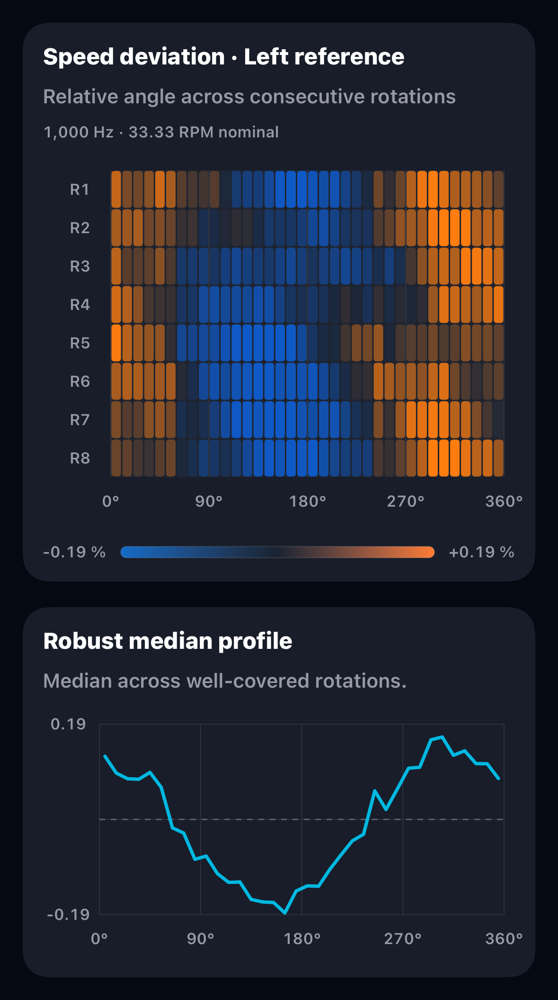
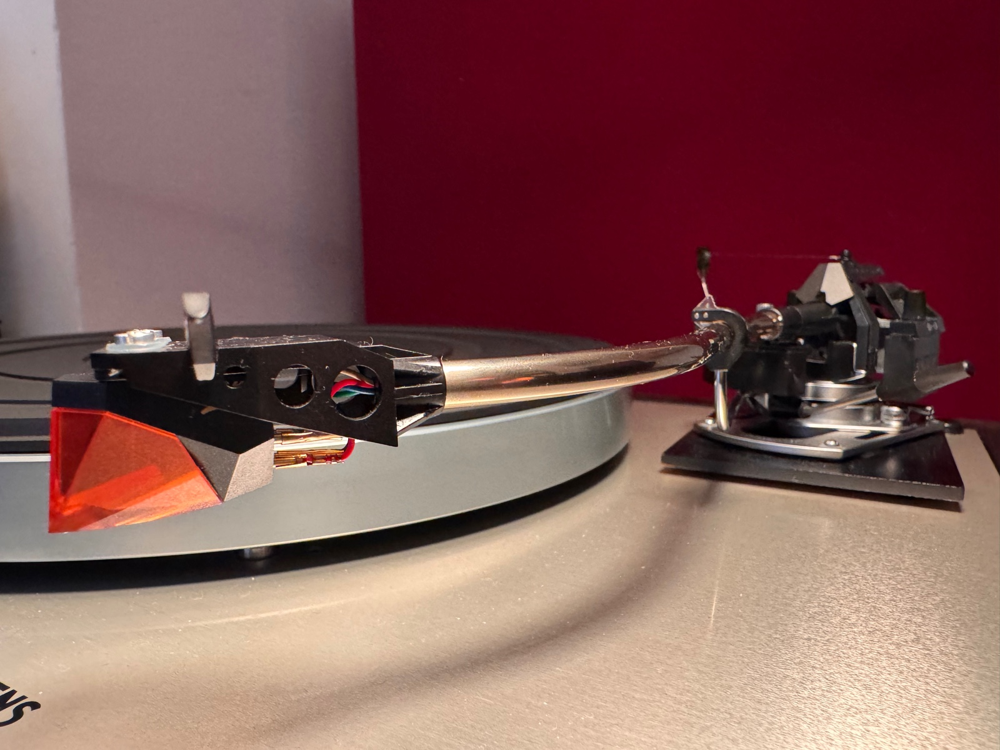
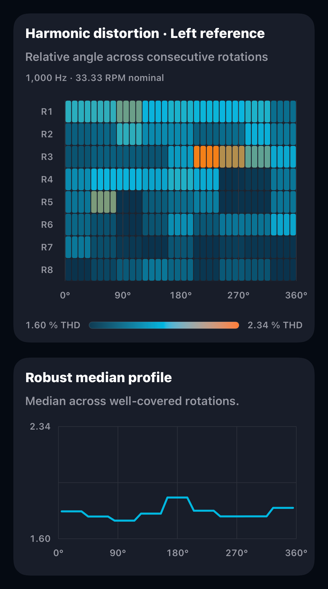
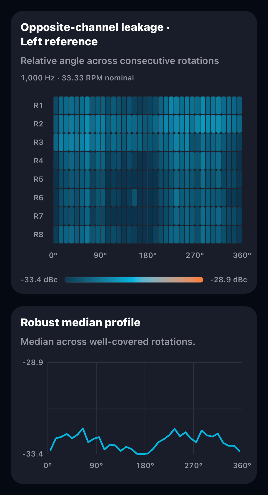
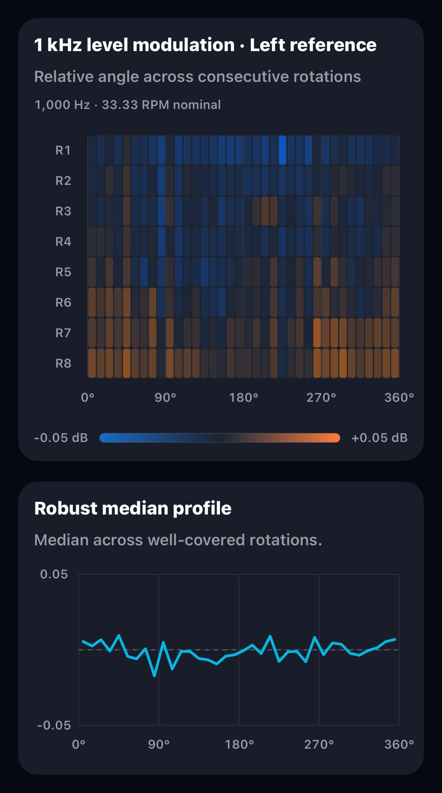

Speed deviation

Left channel selected

Groove Scope measurement · GS-2026-0019
This is a very good measurement
Values exported from the saved capture.
Rotation fingerprints
Each view pairs the angular heatmap with its robust median profile. Choose L or R on each card.

Left channel selected

Left channel selected

Left channel selected

Left channel selected
Channel labels identify the Left-only and Right-only reference tracks. Scales, angular alignment and quality notes are retained in each export.
| Channel balance | L-R +0.86 dB |
|---|---|
| Playback RPM | 33.24 RPM • -0.28% vs 33 1/3 • Settled min 33.17 RPM • Settled max 33.30 RPM • Span 0.14 RPM |
| DIN-shaped wow & flutter RMS | 0.029% |
| Raw speed variation | Unweighted RMS ±0.108% • 2-sigma ±0.216% |
| Raw wow/flutter components | Unweighted wow RMS 0.102% • Unweighted flutter RMS 0.033% |
| 1 kHz Electrical Crosstalk | L→R -32.5 dB • R→L -29.5 dB • Balance 2.92 dB • Avg separation 31.0 dB |
| Distortion diagnostics | L 1.77% THD • R 2.09% THD • THD L-R -0.32 pp • H2 R 1.4 dB higher • H3 R 3.9 dB higher |
| Harmonic reliability | Steady during recording. Suitable for setup guidance. |
| Harmonic profile | L 2nd -35.2 dB • 3rd -55.4 dB • 4th -59.0 dB • 5th -65.4 dB | R 2nd -33.7 dB • 3rd -51.6 dB • 4th -57.8 dB • 5th -64.9 dB |
| Session recommendation | No setup change is justified by the stable primary evidence in this capture. Single-session observation — repeat variable diagnostics before adjusting anti-skate, zenith, azimuth, VTA, or VTF. |
| Method | DIN-shaped wow & flutter RMS is an interim diagnostic, not an IEC/DIN weighted-peak result. Raw speed-variation, wow and flutter values are unweighted diagnostic estimates. |
|---|
The saved measurement, generated plots and supplied photograph are archived with this record. DSR reviewed this contribution before publication. Capture and exporter versions are recorded separately. No raw audio is included.
Results describe the complete playback chain. Quality and repeatability notes remain part of the source record.